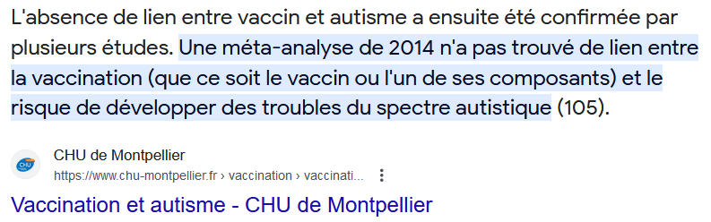
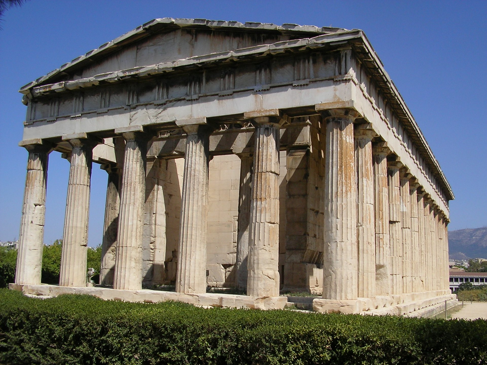
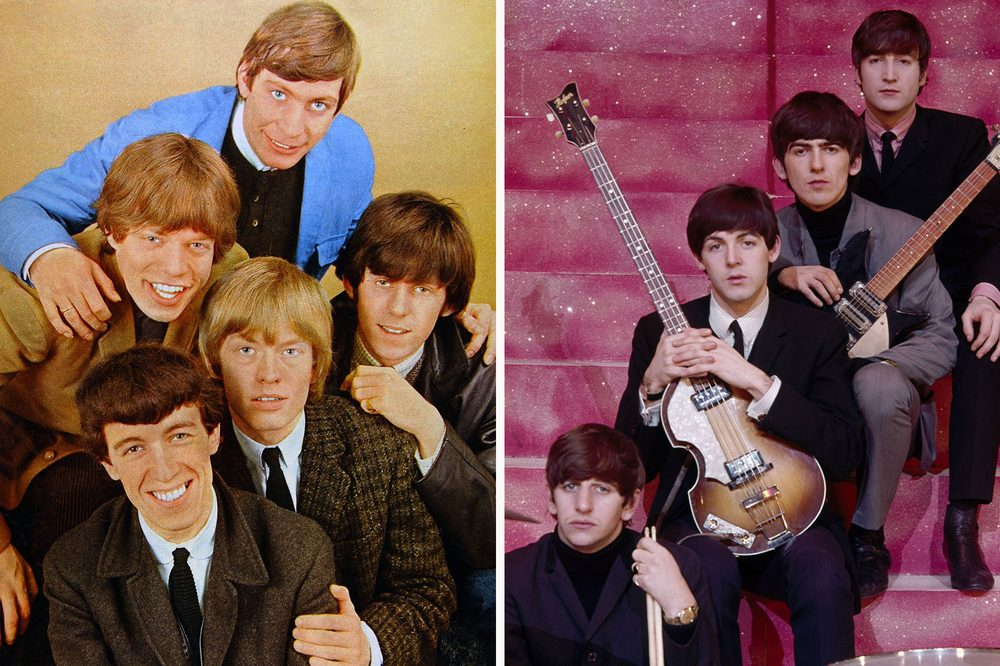
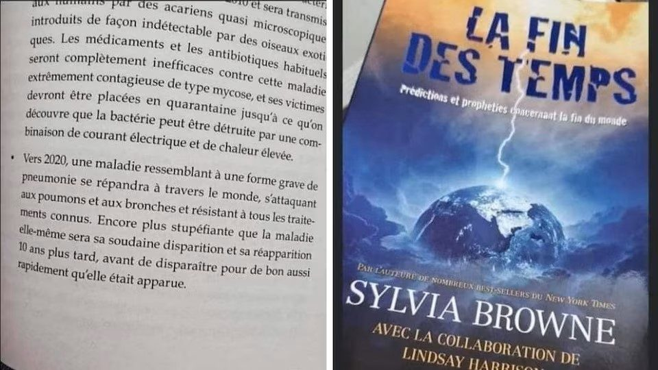

Comment évaluer la crédibilité d’une information ?
Vous, comment faites-vous ?
Quels sont les critères pour valider l'information ?What criteria help us validate information?
Fiabilité de la source.Reliability of the source.
Fiabilité de l'interlocuteur.Reliability of the speaker.
Niveau de preuves.Level of evidence.
Beaucoup de sources en parlent.Many sources report it.
Crédibilité de l'information.Credibility of the information.
Commentaires et critiques de l'information.Comments and criticism of the information.
Fiabilité de la sourceReliability of the source
Fiabilité de la sourceReliability of the source
Fiabilité de l’interlocuteur.Reliability of the speaker.
Fiabilité de l’interlocuteur.Reliability of the speaker.
Niveau de preuvesLevel of evidence
Les preuves peuvent être fausses, falsifiées, ou faire aboutir à la mauvaise conclusion.Evidence can be false, falsified, or lead to the wrong conclusion.
Beaucoup de sources en parlent.Many sources report it.
Beaucoup de sources en parlent.Many sources report it.
Crédibilité de l’informationCredibility of the information
Crédibilité de l’informationCredibility of the information
Quels sont les retours critiques ?What is the critical feedback?
Quels sont les retours critiques ?What is the critical feedback?
CritèresCriteria
– Fiabilité de la source.– Reliability of the source.
– Fiabilité de l’interlocuteur.– Reliability of the speaker.
– Niveau de preuves– Level of evidence
– Multiplicité des canaux de diffusion.– Multiple distribution channels.
– Crédibilité de l’information.– Credibility of the information.
– Commentaires et critiques de l’information.– Comments and criticism of the information.
Actions à effectuer
Remonter à la source.
Vérifier le contexte
Date
Lieu
Contexte général.
Maintenant, allons plus loin.
Le mystère de la dent d’or
« En 1593, le bruit courut que les dents étant tombées à un enfant de Silésie, âgé de sept ans, il lui en était venu une d’or, à la place d’une de ses grosses dents. Horstius, professeur en médecine dans l’université de Helmstad, écrivit en 1595 l’histoire de cette dent, et prétendit qu’elle était en partie naturelle, en partie miraculeuse, et qu’elle avait été envoyée de Dieu à cet enfant pour consoler les chrétiens affligés par les Turcs. Figurez-vous quelle consolation, et quel rapport de cette dent aux chrétiens ni aux Turcs. En la même année, afin que cette dent d’or ne manquât pas d’historiens, Rullandus en écrit encore l’histoire. Deux ans après, Ingolstetetus, autre savant, écrit contre le sentiment que Rullandus avait de la dent d’or, et Rullandus fait aussitôt une belle et docte réplique. Un autre grand homme nommé Libavius ramasse tout ce qui avait été dit de la dent, et y ajoute son sentiment particulier. Il ne manquait autre chose à tant de beaux ouvrages, sinon qu’il fût vrai que la dent était d’or. Quand un orfèvre l’eut examinée, il se trouva que c’était une feuille d’or appliquée avec beaucoup d’adresse ; mais on commença par faire des livres, et puis on consulta l’orfèvre. »
Comment pouvez-vous expliquer ce mystere ?
La dent d’or de Fontenelle
“Assurons nous bien du fait, avant de nous inquiéter de la cause”
“Il est vrai que cette méthode est bien lente pour la plupart des gens, qui courent naturellement à la cause, et passent par-dessus la vérité du fait ; mais enfin nous éviterons le ridicule d’avoir trouvé la cause de ce qui n’est point. »
Bernard Le Bouyer de Fontenelle
Est-ce à cause de l’aluminium qu’ils contiennent que les vaccins causent l’autisme ?

Une fois qu’on a l’information, a-t-on vraiment l’information ?
Au cours de la Seconde Guerre mondiale, le statisticien Abraham Wald a pris en compte le biais des survivants dans ses calculs afin d'évaluer comment minimiser la perte de bombardiers sous le feu ennemi. En étudiant les dommages causés à des aéronefs revenus de mission, l'étude a recommandé de blinder les endroits des appareils qui présentaient le moins de dommages. En effet, Wald a constaté que les études précédentes ne tenaient compte que des aéronefs qui avaient « survécu » à leur mission, sans tenir compte de ceux qui avaient disparu. Ainsi, les endroits endommagés des aéronefs revenus représentent les endroits où ces derniers peuvent encaisser des dommages et réussir à rentrer à la base. La conclusion de Wald est que lorsqu'un aéronef est endommagé à un autre endroit, il ne revient pas de sa mission. En conséquence, ce sont ces endroits - ceux non endommagés chez les « survivants » - qui devraient être renforcés, et non les endroits endommagé
“Mes parachutes sont d’excellentes qualités. La preuve : personne n’est jamais venu se plaindre !”
Une etude montre que les chats qui tombe d’une chute de 6 etages ou moins ont des blessures PLUS importantes que les chats qui tombent d’une chute plus haute. Comment est-ce possible ?
Source : https://pubmed.ncbi.nlm.nih.gov/3692980/



Livre publié en 2008…
Les conseils d’ Harv Eker
Principe n° 1 : Les gens riches croient « je crée ma vie. » Les pauvres croient que « La vie m’arrive à moi. ».
Principe n° 2 : Les gens riches jouent le jeu de l’argent pour gagner. Les pauvres jouent le jeu de l’argent pour ne pas perdre.
Principe n° 3 : Les gens riches s’engagent à être riches. Les pauvres veulent être riches.
Comment diffuser l’information lorsqu’elle peut être conflictuelle ?
Pourquoi une information peut être rejetée par l’élève ?
Exemple : je ne fais pas confiance au vaccin CAR le gouvernement nous ment.
Argument
Conviction
Donc
Un avion ne pourrait pas voler si la Terre était ronde.
La Terre est plate
Dans un monde idéal
Exemple : je ne fais pas confiance au vaccin CAR le gouvernement nous ment.
Argument
Conviction
Donc
Un avion PEUT voler sur une Terre ronde.
La Terre est ronde.
L’argument est la CAUSE de la conviction.
Un avion ne pourrait pas voler si la Terre était ronde.
La Terre est plate
Dans un monde idéal
Exemple : je ne fais pas confiance au vaccin CAR le gouvernement nous ment.
Argument
Conviction
Donc
Les avions ne peuvent pas voler sur une Terre ronde.
La Terre est plate.
Dans notre monde qui ne l’est pas
Exemple : je ne fais pas confiance au vaccin CAR le gouvernement nous ment.
Argument
Conviction
Donc
L’horizon est plat
La Terre est plate.
On ne voit qu’une seule face de la lune
Les rails des trains ne sont pas courbés.
L’argument est la CONSEQUENCE de la conviction.
Dans notre monde qui ne l’est pas
Exemple : je ne fais pas confiance au vaccin CAR le gouvernement nous ment.
Argument
Conviction
Donc
L’horizon est plat
La Terre est plate.
On ne voit qu’une seule face de la lune
Les rails des trains ne sont pas courbés.
Croyance
Dans notre monde qui ne l’est pas
Exemple : je ne fais pas confiance au vaccin CAR le gouvernement nous ment.
Argument
Conviction
Donc
L’horizon est plat
La Terre est plate.
On ne voit qu’une seule face de la lune
Les rails des trains ne sont pas courbés.
Croyance
Je suis croyant
Je suis complotiste
Dans notre monde qui ne l’est pas
Exemple : je ne fais pas confiance au vaccin CAR le gouvernement nous ment.
Argument
Conviction
Donc
L’horizon est plat
La Terre est plate.
On ne voit qu’une seule face de la lune
Les rails des trains ne sont pas courbés.
Croyance
Je suis croyant
Je suis complotiste
Dans notre monde qui ne l’est pas
Contexte social
Biais d’engagement / Identification
Exemple : je ne fais pas confiance au vaccin CAR le gouvernement nous ment.
Argument
« L’horizon est plat »
Conviction
La Terre est plate.
Croyance
Personnelle ou religieuse : « je suis croyant », « je suis complotiste ».
Biais d’engagement / Identification
Investissement dans la conviction.
Contexte social
Difficulté d’admettre ses erreurs en public, positionnement social.
Ce que l’élève dit… et ce qui le retient
Chaque clic fait apparaître une couche sous l’eau : conviction, croyance, biais d’engagement, contexte social. Exemple : je ne fais pas confiance au vaccin CAR le gouvernement nous ment.
Comment diffuser l’information lorsqu’elle peut être conflictuelle ?
Personnelle ou religieuse.
Investissement dans la conviction.
Difficulté d’admettre ses erreurs en public, positionnement social.
Croyance
Biais d’engagement / Identification
Contexte social
Exemple : je ne fais pas confiance au vaccin CAR le gouvernement nous ment.
Montrer que l’on PEUT garder cette croyance tout en changeant sa conviction.
Montrer que cette conviction peut se voir selon le prisme de la croyance (exemple : le COVID aux Etats Unis).
Croyance
Exemple : je ne crois pas a la theorie de l evolution CAR je suis croyant.
Je ne crois pas au nucleaire CAR je suis ecologiste.
Garder un lien de confiance avec la personne.
Montrer que c’est l’idée qu’on attaque, et non pas elle.
Expliquer d’où l’on tire son propre raisonnement (storytelling).
Ne pas chercher à écraser l’autre.
Ne pas chercher à convaincre la personne.
Biais d’engagement / Identification
Vous ne POUVEZ PAS gagner l’échange (son but n’est pas de vous convaincre vous, mais les autres).
Quittez l’affrontement dans un milieu social.
Ne pas chercher à écraser l’autre.
Ne pas chercher à convaincre la personne.
Contexte social
Quelques conseils généraux
Commencer par un sujet neutre, pour décrire un principe, puis allez sur un sujet plus « sensible » qui applique ce même principe.
Comment bien échanger ?
Un changement de conviction est PROGRESSIF !
Votre but n’est pas de le faire radicalement changer d’avis, mais de l’amener à réfléchir.
La simple écoute d’arguments contraires, même s’ils sont réfutés, c’est déjà une victoire !
Principe de charité
Partez du principe que l’interlocuteur est sincère… car c’est souvent le cas !
Cela vous éviteras de tomber dans le biais d’engagement… ce qu’il se passera si vous vous énervez dès le début pour de mauvaises raisons !
Point essentiel
L’apprentissage et le changement d’idées erronées se fait sur le LONG TERME.
Exemple concret d’échange
Ecrivez une dystopie
Exemple concret d’échange
Ecrivez une dystopie
« Un jour, les LGBTS domineront le monde et on sera obligé de vivre comme eux. »
« Un garçon m’a dragué, je l’ai repoussé, il m’a traité d’homophobe.»
« Un garçon m’a dragué, je l’ai repoussé, il m’a traité d’homophobe.»
Généralisation (un garçon homosexuel -> tous les garçons homosexuels)
Un raisonnement fallacieux : comme on m’a accusé d’homophobe car j’ai refusé les avances d’un homme,
on ne pourra plus refuser les avance d’un homme sans être traité d’homophobe.
« Un garçon m’a dragué, je l’ai repoussé, il m’a traité d’homophobe.»
Généralisation (un garçon homosexuel -> tous les garçons homosexuels)
Un raisonnement fallacieux : comme on m’a accusé d’homophobe car j’ai refusé les avances d’un homme,
on ne pourra plus refuser les avances d’un homme sans être traité d’homophobe.
Conseil : briser la généralité, utiliser l’expérience personnelle (« moi, je n’ai jamais été dans ce cas de situation »)
« Pour moi, c’est Adam et Eve. C’est donc un garçon et une fille. »
« Pour moi, c’est Adam et Eve. C’est donc un garçon et une fille. »
Conviction religieuse : difficile.
« Pour moi, c’est Adam et Eve. C’est donc un garçon et une fille. »
Conviction religieuse : difficile.
Sur le moment : je suis passé à autre chose.
« Pour moi, c’est Adam et Eve. C’est donc un garçon et une fille. »
Conviction religieuse : difficile.
Sur le moment : je suis passé à autre chose.
Conseil : dire qu’il s’agit de ses croyances à lui, pas de celles des autres.
« C’est pas naturel ».
« C’est pas naturel ».
Conviction personnelle : appel à la nature.
« C’est pas naturel ».
Conviction personnelle : appel à la nature.
Conseil :
« Si on laisse passer la transidentité, bientôt on aura des xénogenres. »
« Si on laisse passer la transidentité, bientôt on aura des xénogenres. »
Sophisme de la pente savonneuse.
« Si on laisse passer la transidentité, bientôt on aura des xénogenres. »
Sophisme de la pente savonneuse.
Conseil : le raisonnement par comparaison.
« Mais enfin, c’est pas normal »
Conviction, appel au « bon sens ».
« Mais enfin, c’est pas normal »
Conviction, appel au « bon sens.
Conseil : demander ce qu’est la normalité, et utiliser le raisonnement par comparaison.
« Mais enfin, c’est pas normal »
Conclusion :
Eviter la confrontation.
Dédramatiser.
Comparer avec des situations où ils sont d’accords, puis transposer sur la situation problématique.
Laisser faire le temps.
A vous !
Après la séanceAfter the session
Le bilan, les jeux, et votre retourSummary, games, and your feedback
Scannez ce QR code : vous pourrez donner votre retour, revoir le bilan de la formation ou rejouer aux jeux.Scan this QR code: you can leave your feedback, review the session summary, or play the games again.


![QR code vers la page antoninatger.github.io/interventions/retours]() antoninatger.github.io/interventions/retours →antoninatger.github.io/interventions/retours →
antoninatger.github.io/interventions/retours →antoninatger.github.io/interventions/retours →